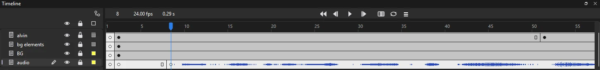
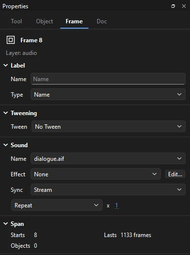

Animation
Sound
Dialogue, music and effects play with your timeline in Phoenix, and go out with your video, SWF movies and web pages. A sound lives in the library and plays from the keyframes you put it on.
Bring in sound
Import sounds with , or drag sound files onto the window. Phoenix reads WAV, AIFF, MP3, FLAC and Ogg files. Each sound becomes a library item. (Ctrl+R) puts a sound in the library too; to attach it to the current frame as well, drop the sound file on the stage. brings in an animatic's audio tracks, each on a layer of its own; see Start from the animatic. can bring in a video's sound too; see Video.
Phoenix plays every sound as 44.1 kHz stereo, whatever it was recorded at, so sounds of different rates mix together cleanly. Sounds that come with an FLA file play as they are stored in it, whether as uncompressed samples or as MP3.
To check a sound, right-click it in the library and choose Properties..., or double-click it. Sound Properties shows its name, how it is stored and how long it lasts, with Play and Stop to hear it.
Put a sound on the timeline
- Make a keyframe where the sound should start, ideally on a layer of its own.
- With the playhead on that keyframe, open the Frame tab of the Properties panel and choose the sound from the Name list under Sound. You can also drag the sound from the library onto the stage to attach it to the current frame, or onto a frame in the timeline to put it on that layer at that frame.
The sound's waveform is drawn across the frames it plays over, so you can time animation to beats and syllables by eye. The sound plays for as long as its keyframe's span lasts, so give the layer enough frames to hold it. To take a sound off, choose None from the Name list.

Sound settings
The Sound section shows only while the playhead is on the keyframe that holds the sound. On a later frame of its span, the Frame tab names the keyframe instead; click the keyframe to get to the sound.

- Name
- The library sound the keyframe plays, or None.
- Effect
- How the volume changes as the sound plays. See Effects.
- Sync
- How the sound follows the timeline: Event, Start, Stop or Stream. See below.
- Repeat or Loop
- Repeat plays the sound the number of times you type beside it, from 1 to 65535. Loop plays it over and over for as long as its frames last.
Sync
- Event
- Plays the whole sound from start to finish once the playhead reaches its keyframe, whatever the timeline does after that. It is the default. Use it for short effects: a door slam, a footstep, a button click.
- Start
- Like Event, but if the same sound is already playing it doesn't start a second copy. Use it for a sound that a looping timeline would otherwise pile up.
- Stop
- Silences the named sound wherever it is playing. Put it on a keyframe where an event sound should end.
- Stream
- Locks the sound to the frames. It plays only while the playhead moves through its span, from the point that matches the frame shown, and stops when the span ends. Use it for dialogue, music and anything that has to stay in step with the picture.
Effects
- None
- Full volume in both channels.
- Left Channel, Right Channel
- Plays the sound in one speaker only.
- Fade Left to Right, Fade Right to Left
- Moves the sound from one speaker to the other over its length.
- Fade In, Fade Out
- Rises from silence at the start, or falls to silence at the end.
- Custom
- A volume envelope you draw yourself in Edit Envelope.
Edit Envelope
Click Edit... beside the Effect, or choose Custom, to shape the sound's volume. The waveform shows in two lanes, the left channel over the right, each with its volume as a line from silent at the bottom to full at the top:
- Click a lane to add a point there, up to eight. Drag a point to move it along the sound and to set that channel's volume. The volume runs in straight lines between points.
- Drag a point well out of its lane to take it away.
- Drag the green and red bars on the ruler between the lanes to trim where the sound starts and stops. A trimmed sound plays only the part between them, and repeats and loops play that part again.
- Zoom In and Zoom Out to work closely; Frames measures the ruler in frames instead of seconds; Play and Stop preview the sound as the frame will play it; Clear sets full volume throughout, untrimmed.
Picking one of the ready-made effects after editing replaces your envelope with that effect's. The envelope and trim are one step to undo, and are saved the way FLA files keep them, so other apps that read FLA files hear the same thing.
Split Audio
To cut a stream sound in two, for example to slip the second half of a line a few frames later, put the playhead inside its span on its layer and choose . A new keyframe starts there, playing the sound from that point on with the same settings and envelope, and the first keyframe stops where the second begins.
Hearing sound while you work
Press Enter or the play button to play the timeline with its sound. Drag the playhead to scrub: stream sounds play a frame's worth at each frame you pass, so you can find a word or a beat. Event and start sounds play only when playback reaches their keyframes, not while you scrub, and movie clips stay silent while you scrub.
When you play the document in Phoenix, you hear the sounds on the scene's own timeline and those inside the movie clips on the stage, as each clip plays its own timeline. To hear only the scene's sounds, turn on ; Phoenix remembers the choice, and exports include movie clip sounds either way. Sounds inside graphic symbols and buttons stay silent while you animate, and sounds on hidden layers are left out of playback and exports.
To work in silence, choose (Ctrl+Alt+M).
Exporting sound
In video and WAV files
(Ctrl+Alt+Shift+S) mixes every sound that plays over the exported frames, movie clip sounds included, into the video while Include sound is checked: as 192 kbps AAC in an H.264 MP4, or as uncompressed 16-bit audio in a ProRes MOV. Each sound plays as you hear it in Phoenix, with its sync, effect, envelope, trim and loops. To export the mix on its own, choose the Sound (WAV) format: a 16-bit, 44.1 kHz stereo WAV file of the frames you choose. See Export Movie.
Phoenix doesn't export a single library sound on its own, and has no per-sound export settings. To get one sound out, put it on a layer by itself, hide the others, and export the frames it plays over as Sound (WAV).
In SWF movies
SWF movies keep stream sounds and event sounds apart, the way SWF players expect:
- Stream sounds are mixed into one soundtrack that streams with the frames, so it stays in step with the animation.
- Event, Start and Stop sounds go in as sounds of their own, each stored once and started and stopped on its keyframes with its loops, trim and envelope. They play to the end like event sounds in any player, and those inside movie clips start with their clips.
sets how the sound is compressed under SWF sound:
- MP3: the smallest, at a bit rate from 8 to 192 kbps. MP3 needs the encoder in Phoenix's ffmpeg; where it has none, the movie gets ADPCM instead and the status bar says so.
- ADPCM: quick and plain, at 2 to 5 bits a sample (more bits, truer sound, larger file).
- Raw: uncompressed, for the truest sound.
- None: a silent movie.
Each also has a sample rate (5.5, 11, 22 or 44 kHz; MP3 starts at 11) and can be stereo or mono. Lower rates and mono make a smaller file at the cost of clarity: 22 kHz suits speech, 44 kHz suits music. The settings apply to , and SWF renders from the command line.
An FLA file made elsewhere can carry its own compression for each library sound, and separate settings for stream and event sounds. Phoenix keeps them and uses them for the event sounds: a sound with its own settings goes in with those (an MP3 kept at its imported quality goes in as it is), unless the file's publish settings say theirs win. Phoenix itself has no control to set compression for one sound.
In HTML5 pages
An HTML5 page plays event, start, stop and stream sounds as they are set, looping as set, from MP3 files it writes in the page's assets folder. Browsers let a page make sound only once the viewer has clicked or pressed a key on it, so the sound starts then.
Sounds in scripts
Sounds on keyframes play in Test Movie as they do on the timeline. Scripts can play library sounds too: in ActionScript 2, new Sound() with attachSound(), start(), stop(), setVolume() and onSoundComplete; in ActionScript 3, a sound's class with play(); and stopAllSounds() or SoundMixer.stopAll() to silence everything. See What games use.
A script finds a library sound by its linkage name. Phoenix keeps and uses the linkage of sounds in FLA files, but has no way to give a sound a linkage name yet: the Linkage command is for symbols, and scripts can set linkage on symbols and bitmaps only. To play a new sound from a script, put it in the file with linkage in another app, or start it from a keyframe instead.
Reference video
brings in live action or an animatic to animate over, as a still per frame on a locked guide layer, with its sound as a stream sound if you like. See Video.
Lip sync
Draw the mouth shapes as the frames of a graphic symbol, put an instance of it on a layer of its own, select it and choose .
- From a recording. Choose the voice under Sound: a sound in the library (the one on the timeline is chosen for you), or A recording on disk to pick a WAV or Ogg file. Phoenix runs Rhubarb Lip Sync, a free program (MIT licensed) that listens to the line and works out the mouth shapes. Download it once and point Phoenix at
rhubarb.exe; Phoenix remembers where it is. Typing the words spoken helps it get them right. Without Rhubarb, Phoenix listens itself: it opens the mouth wider as the voice gets louder, closes it between syllables, sets the teeth together for hissing sounds and rests it in the quiet. That is rougher than Rhubarb but needs nothing else. - From a cue file. Load mouth shapes worked out before: Rhubarb's TSV output, or a Papagayo or Moho switch file (
.dat).
Choose Read Mouth Shapes, then check the mouth chart: the frame of your mouth graphic each shape is drawn on (Rhubarb's shapes are A to H and X for rest; Papagayo's are its phoneme names). Label each frame of the mouth graphic with its shape's name (see Frame labels) and the chart fills itself in; otherwise the shapes go on frames 1, 2, 3 and on, in that order, and you set the right frame for each. Key the Mouth clears the mouth layer over the line and puts a keyframe wherever the mouth changes, each showing its shape's frame as a single frame, starting on the frame you chose. The chart is kept with the mouth symbol for next time, and the whole step undoes at once.
To touch up a shape afterwards, click its keyframe on the mouth layer and pick another frame in the Frame Picker. To try it all on a ready-made face and voice, follow the Lip sync tutorial.